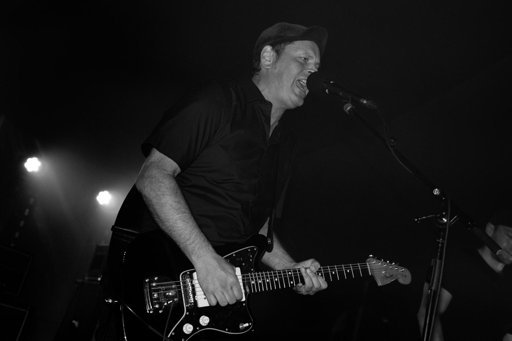

Ein Gespräch mit Marco van Gente über Musik, Maschinen und Menschlichkeit
Künstliche Intelligenz ist dabei, die Musiklandschaft grundlegend zu verändern. Songs entstehen heute nicht mehr nur in Proberäumen oder Studios, sondern auch auf Servern – schnell, effizient und in großer Menge. Während Streamingplattformen zunehmend von KI-generierter Musik geflutet werden, stellt sich eine zentrale Frage: Was bedeutet das für Musikerinnen und Musiker, die Musik als Ausdruck, Haltung und persönliche Sprache verstehen?
Für dieses Interview haben wir mit Marco van Gente gesprochen. Er macht seit den späten 1980er-Jahren Musik und ist Gitarrist der Band Dramatist. Seine Perspektive verbindet jahrzehntelange Erfahrung mit einem nüchternen, oft pointierten Blick auf KI, Authentizität und die Zukunft von Musik.
Kurzprofil: Marco van Gente
Marco van Gente begann 1988 im Alter von 14 Jahren Gitarre zu spielen. Der Einstieg erfolgte über eine Schulband an der Realschule, doch schnell wurde klar, dass ihn das reine Nachspielen fremder Songs nicht reizte. Stattdessen begann er früh, eigene Musik zu schreiben – ein Ansatz, der bis heute prägend ist.
Sein Songwriting entsteht intuitiv. Ideen entwickeln sich beim freien Spielen auf der Gitarre, häufig in ungewöhnlichen Stimmungen. Standard-Tunings empfindet er als langweilig. Emotionen drückt er über laute Verstärker, Verzerrer und einen sehr spezifischen Gitarrensound aus, der für ihn eine zentrale Rolle spielt.
Persönliche Erlebnisse fließen weiterhin in seine Musik ein, werden jedoch zunehmend überzeichnet und mit gesellschaftlichen Themen kombiniert. Marco verarbeitet Emotionen, Beobachtungen, Träume und Ängste in seinen Texten.
Die Band Dramatist gründete sich vorletztes Jahr, auch wenn einzelne Mitglieder bereits seit 1999 gemeinsam Musik machen. Die Band steht für intensive, dringliche Gitarrenmusik mit klarer gesellschaftlicher und musikalischer Haltung. Beim Texten nutzt Marco van Gente KI bewusst als Werkzeug – nicht als Ersatz, sondern als Inspirationsquelle.
Interview
Seit wann bist du Musiker? – Und weißt du noch, warum du damals angefangen hast?
Ich habe 1988 mit 14 angefangen Gitarre zu spielen. Es gab bei uns an der Realschule eine Schulband und der Gitarrist war bereits in der 10. Klasse, dessen Nachfolge wollte ich gerne antreten. Ich habe dann schnell gemerkt, dass Songs nachspielen lernen nicht so mein Ding ist, und fing schnell an eigene Songs zu schreiben.
Wie arbeitest Du, wenn Du Songs schreibst? Eher intuitiv oder sehr geplant?
Ich liege meist rum und daddel irgendwelche Sachen auf der Gitarre, und wenn ich dann merke, dass da etwas Interessantes dabei war, dann setze ich mich aufrecht und arbeite daran. Ich mag interessante Riffs und Melodien, die sehr „eigen“ klingen, deswegen spiele ich in ungewöhnlichen Stimmungen Gitarre. Für mich ist nichts langweiliger als eine normal gestimmte Gitarre. Zudem brauche ich neben einem lauten Verstärker, zig Effektgeräte, insbesondere Verzerrer, um meiner Emotion Ausdruck zu verleihen. Gitarrensound muss für mich einen bestimmten Twang haben, den ich so generiere.
Welche Rolle spielen persönliche Erlebnisse in deiner Musik?
Früher eine größere als heute. Ich steigere mich manchmal so rein, dass ich beim Texten so viel übertreibe, dass es nichts mehr mit der Wirklichkeit zu tun hat. Wieso auch nicht? Jesus ist in der Bibel auch über das Wasser gelaufen, ich mag es, wenn es bildlich wird. Heute schnappe ich viele Themen in den Nachrichten auf und singe über dicke, weiße Familienclans, die nicht gut für die Gesellschaft sind. Ich verarbeite in der Musik meine Emotionen und teile meine Träume und Ängste mit anderen Menschen.
Seit wann gibt es die Band?
Dramatist haben wir vorletztes Jahr gegründet. Mit einigen Musikern der Band spiele ich aber schon seit 1999 zusammen. Es war einfach mal Zeit, etwas zu verändern. Das hat mir sehr gut getan.
Wie würdest du eure Musik jemandem erklären, der euch noch nie gehört hat?
Intensive und dringliche Gitarrenmusik mit einer großen Portion gesellschaftlicher und musikalischer Haltung.
Woher kommt der Bandname?
Er war zunächst ein Songname von uns. Es ging in dem Song um jemanden, der total übertreibt und die einfachsten Gefühle zu cineastischen Meisterwerken auftürmt. Wir fanden das so sympathisch, so sein zu dürfen, dass wir uns so genannt haben.
Gibt es einen Song von dir, der dich besonders gut widerspiegelt – und warum?
Ich schreibe nicht über mich, sondern über das, was ich sehe und mitbekomme. Ich habe aber keinen Favoriten.
Nutzt du für deine Musik auch manchmal eine KI, wenn ja, wie?
Beim Texten nutze ich häufig KI. Ich sage Copilot beispielsweise, es soll mir eine Situation in punkigem amerikanischem Englisch beschreiben und schnappe mir dann Sachen daraus für meine Lyrics. Manchmal bringe ich so Copilot auch dazu, dass nur noch Schwachsinn rauskommt, das finde ich sehr inspirierend. Manchmal auch einfach nur lustig.
Du spielst in der Band Dramatist – Was bedeutet die Band für Dich?
Die Band gibt mir den Raum, mich emotional total ausleben zu können. Nach einem Konzert gibt es den Moment, in dem die Zeit stehen zu bleiben scheint. Alle lachen in Zeitlupe, alle haben Redebedarf, außer mir, ich genieße.
Wann hast du zum ersten Mal bewusst einen KI-Song, also einen Song, der ausschließlich von KI generiert wurde, gehört – und wie war dein erster Eindruck?
Im Radio gab es mal diesen Beatlesong, der komplett KI-generiert war. Ich fand den sehr glatt und ausdrucksarm.
Glaubst du, man hört einem Song an, ob er von einem Menschen oder einer KI stammt?
Es gibt seit den 90ern Musiker, die so viel Technik in der Produktion einsetzen, dass es für mich auch keinen Unterschied mehr zur komplett generierten KI-Produktion macht. Diese Musiker wird die KI komplett ersetzen, d.h. der Konsument bekommt für jede Stimmung punktgenau die Lala, die er braucht. Wie ein Schnuller werden diese Konsumenten wahrscheinlich nichts vermissen.
Was denkst du: Kann KI das Songwriting ersetzen – oder höchstens unterstützen?
Songwriting ist überschätzt, das kann eine KI ersetzen. Die authentische Performance hingegen wird KI voraussichtlich nicht ersetzen können.
Gibt es etwas in deiner Musik, das eine KI deiner Meinung nach nicht nachmachen kann?
Ich bilde mir ein, ein menschliches Individuum zu sein, das zu komplex ist, um von einer KI 1:1 kopiert werden zu können. Musik hat so viel mit Charakter zu tun, dass man fast die Gegenfrage stellen muss: Glaubst du, dass du dich jemals in eine KI verlieben wirst?
Verändert KI-Musik den Wert von handgemachter Musik – oder macht sie ihn sogar größer?
Ich denke und hoffe, dass durch die KI-Entwicklungen die authentischen Künstler gewinnen werden und die drögen Konservenmukker schlichtweg durch KI ersetzt werden.
Spürst du schon Auswirkungen von KI-Musik auf Streamingplattformen?
Nein, noch nicht.
Macht dir die Entwicklung eher Sorge/Angst – oder siehst du darin Chancen?
Weder noch. Machen wird sie helfen, jene, die sich durch sie ersetzen lassen, werden es wahrscheinlich verdient haben.
Wie wünschst du dir die Zukunft der Musik in einer Welt voller KI?
Ich wünsche mir Menschen, die KI nutzen, aber so geschickt, dass ich es nicht merke.
Glaubst du, dass echte, persönliche Musik wieder wichtiger wird?
Yes, das wird sie. Aber vielleicht erst, nachdem sich der Mainstream mit KI-generierter Musik ausgetobt hat.
Was würdest du jungen Musikerinnen und Musikern raten, die heute anfangen?
Mach Musik für dich und messe deine Musik immer nur daran, wie sie dir gefällt. Alles andere ist keine Kunst, sondern Kommerz und diese wird durch KI ersetzt werden, easily.